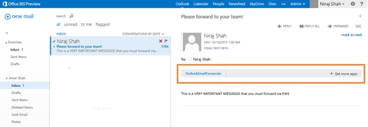
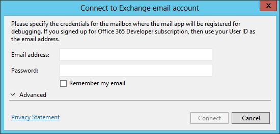

Summary: This sample app shows how to use JavaScript and Exchange Web Services in a mail app for Outlook to forward the current mail items to a list of user-defined email addresses, and optionally to include user-defined comments with the forwarded email.
Description of the sample
Figure 1 shows the sample mail app available in the app bar of the user's email in Outlook Web Access.

When the user chooses the mail app in the app bar, the full user interface for the app expands into view. The user can then type email addresses separated by semicolons in the space provided, and optionally any comments they want to send with the forwarded email.
Finally, when the user chooses the Go! Button in the app user interface, JavaScript code forwards the email to each of the addresses that the user enters, and includes any comments from the Comments text box with the forwarded email. The user interface for the app then shows a message indicating the success or failure of the operation.
Prerequisites
This sample requires:
-
Visual Studio 2012 (RTM).
-
Office 2013 tools for Visual Studio 2012 (RTM).
-
Either access to an Office 365 Developer Site (highly recommended) or a local installation of Exchange Server 2013.
Key components of the sample
The sample app contains:
-
The OutlookEmailForwarder project, which contains:
-
The OutlookEmailForwarder.xml manifest file.
-
-
The OutlookEmailForwarderWeb project, which contains multiple template files. However, files that have been developed as part of this sample solution include:
-
OutlookEmailForwarder.html (in the Pages folder). This contains the HTML user interface that is displayed in the task pane. It consists of simple HTML, two text input controls, and a button input control.
-
OutlookEmailForwarder.js (in the Scripts folder). This script file contains code that runs when the app is loaded.
-
All other files are automatically provided by the Visual Studio project template for apps for Office, and they have not been modified in the development of this sample app.
Configure the sample
To test the sample, sign up for an Office 365 Developer site, and then send at least one email to an email account that you have configured there before running this sample. Alternatively, you can set up a local installation of Exchange Server 2013 and ensure that at least one mailbox has been configured for you, and then send at least one email to that account before running this sample. No other configuration is necessary.
Build the sample
Choose the Ctrl+Shift+B keys to build the solution.
Run and test the sample
-
Choose the F5 key to run the app. The following dialog box appears.
Figure 4. Connect to Exchange email account dialog box
 -
Enter your Office 365 Developer site credentials, and then choose the Connect button to enable the app to automatically discover the Exchange Web Services URL and the Outlook Web Access URL that it will need to deploy and run the sample.
-
You may then be prompted to log on to Outlook Web Access for your Office 365 Developer site. If so, enter the same credentials that you used in Step 2.
-
You can then follow the steps discussed at the beginning of this document to see the app in action.
Troubleshooting
If you are attempting to use a local installation of Exchange Server, ask an Exchange administrator to ensure that Exchange Server 2013 is configured correctly. It is recommended that you sign up for an Office 365 Developer site to test this sample, as a local installation of Exchange Server 2013 can be complex and time-consuming to set up.
Change log
First release: April 15, 2013.